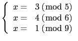

suivant: Résolution de a2 +
monter: Les entiers (et les
précédent: Reste chinois : ichinrem,
Table des matières
Index
Reste chinois pour des listes d'entiers: chrem
chrem a comme argument deux listes de même longueur.
chrem renvoie une liste de deux entiers.
Par exemple, chrem([a,b,c],lcm(p,q,r)) désigne une liste formée de
deux entiers :
le premier entier est un nombre x vérifiant :
x=a mod p et x=b mod q et x=c mod r.
Il existe toujours une solution
x si p et q sont premiers entre eux, et toutes les solutions
sont congrues modulo p*q*r
ATTENTION à l'ordre des paramètres, en effet on a :
chrem([a,b],[p,q])=ichrem([a,p],[b,q])=
ichinrem([a,p],[b,q])
Exemples :
Trouver les solutions de :
On tape :
chrem([3,9],[5,13])
On obtient :
[-17,65]
ce qui veut dire que x=-17 (mod 65)
Trouver les solutions de :

On tape :
chrem([3,4,1],[5,6,9])
On obtient :
[28,90]
ce qui veut dire que x=28 (mod 90)
Remarque
chrem peut aussi être utiliser pour trouver les
coefficients de polynômes qui sont connus modulo plusieurs entiers, par
exemple trouver
ax + b modulo
315 = 5×7×9 tel que :

,

On tape :
chrem([3x+1,4x+2,x+3],[5,7,9])
On obtient :
[-17x+156),315]
ce qui veut dire que a=-17 (mod 315) et que b=156 (mod 315).
suivant: Résolution de a2 +
monter: Les entiers (et les
précédent: Reste chinois : ichinrem,
Table des matières
Index
Documentation de giac écrite par Renée De Graeve